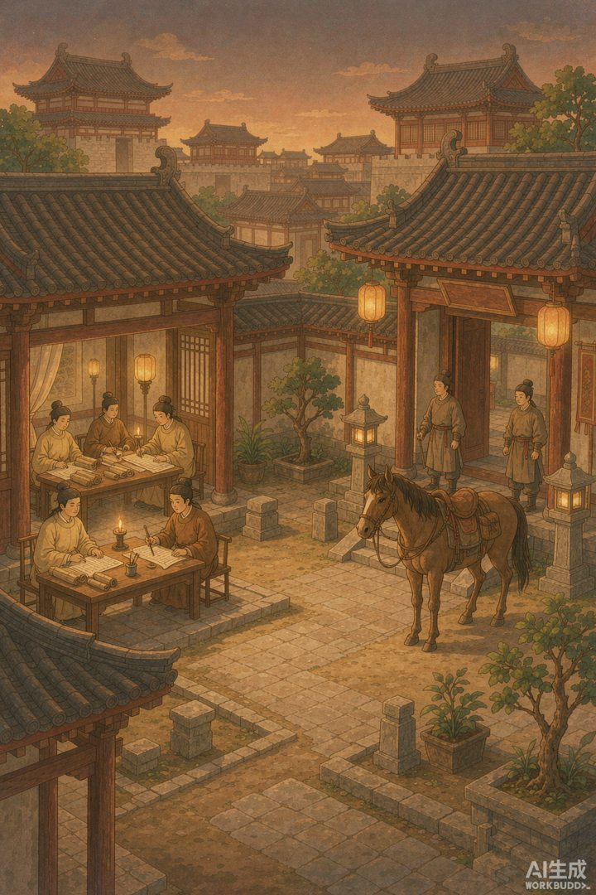

|
信息传播那些事儿 · 卷二「竹简与封泥」· 第 26 篇 |
|
唐代进奏院状 —— 中国报纸的祖宗，是地方「驻京办」发回老家的内参 |

▲ 进奏院：藩镇在长安的「驻京办」，也是中国最早的「报社」（AI 生成示意图）
|
你早上睁眼先刷手机看热搜；一千年前的唐朝官员，早上起来也先「刷」一份东西。只不过他们的版本是手抄的，没有评论区，而且一刷就是一千二百年没停过。 |
上回说到魏晋名士靠一张嘴「清谈」，把观点传得满城风雨。可嘴毕竟靠不住，传几代就走样。到了唐朝，事情起了变化——有人第一次把朝廷的动静，按日子一条条写下来，抄成册子，定期发往全国各地。这玩意儿，就是中国报纸的祖宗，叫「邸报」。
今天要讲的，是它最正统一支的出身：进奏院状。听着像个公文，其实它就是古代版的「内参加机关报」——给特定的人看，报特定的事，谁准看、报什么，全由朝廷说了算。
一 | 藩镇的「驻京办」 |
唐朝实行藩镇制度，各地节度使在京城长安都设有办事处，最初叫「邸」，后来改名「上都知进奏院」，简称进奏院。这地方干的事，跟今天的驻京办一模一样：替老家的领导跑关系、递材料、打听风向。
驻在这里的常任代表，叫进奏官，民间也叫「邸吏」。他们的正经活儿，是给皇帝和自家节度使当联络员，把中央的谕旨、诏书、臣僚奏议、官员任免，一条条抄成简报，再派快马经驿道送回藩镇。这简报，就是「进奏院状」，也叫「邸报」「报状」。
你看，这拨人是不是特别像今天的「驻站记者」加「编辑」？他们不写小说，只整理朝廷要闻，按日期连续发布。区别是——他们的读者不是老百姓，是自家节度使和京城官圈。说白了，这是一份内部刊物，不是公开报纸。
▲ 进奏官伏案抄写朝廷动态，唐代「编辑记者」的日常（AI 生成示意图）
二 | 孙樵的「读报笔记」 |
现存最早记载「报纸长什么样」的文字，出自一位唐朝文人之手。晚唐的孙樵，在唐宣宗大中五年（公元 851 年）写下一则小文《读开元杂报》。他说自己在湖北一带，翻到几十幅纸，上面「系日条事，不立首末」——按日子记事，没有开头结尾，平铺直叙。
内容呢？都是开元年间的朝廷新闻：「某日皇帝亲耕籍田，行九推礼」「某日百僚行大射礼于安福楼南」「某日安北诸蕃君长请扈从封禅」……全是皇帝和百官的动态，简短、平实，像极了今天政务号发的「今日要闻」。
有意思的是，孙樵一开始根本不认识这东西，自嘲「樵当时未知何等书」。连个文化人都没见过，可见当时邸报流传范围极窄，只在官场小圈子里转。但正是这篇「读报笔记」，让我们今天能隔着千年，看清一份唐代报纸的面目。
三 | 敦煌那张纸 |
孙樵读的是开元年间（公元 713—741 年）的报纸，比他早了一百多年。而真正能让我们摸到的唐代报纸实物，出土在敦煌。
唐僖宗光启三年（公元 887 年），驻敦煌的归义军节度使派往朝廷的进奏官张夷则，从皇帝行在凤翔，给沙州（今敦煌）发回一份状报，汇报节度使派人进京申请「旌节」的进度。这张纸长 97 厘米、宽 28.5 厘米，全文两千多字，毛笔抄写，没有报头。1907 年前后被斯坦因带走，如今躺在大英图书馆，编号 S1156。
它是世界上现存最早的报纸实物。注意，它报的不是天下大事，而是「我们家派人进京要官，批下来没」——妥妥的一份驻京办内部简报。这也坐实了邸报的本质：官家的信息网，先服务统治，再谈别的。
▲ 快马经驿道把状报发往藩镇，古代「发行网」靠腿和马（AI 生成示意图）
📌 本篇数字锚点 | ||||||||||
|
所以你看，邸报从一出生就被三把锁拴着：写什么，朝廷定；谁能看，官圈定；传多远，驿道定。它不是给百姓看的消息，是统治机器自己用的神经。可一旦「定期抄发、按日条事」这个形式立住了，就堵不住了——因为人永远想知道「上面发生了什么」。下一回，就有人偏不按官家那套来，自己偷偷印、偷偷卖，朝廷气得连下禁令。那是宋朝的「小报」，中国最早的民间自媒体。
|
🔔 下篇预告 · 第 27 篇《宋朝「小报」》—— 朝廷明令查禁的民间报纸，怎么越禁越火，还养出了中国最早的「狗仔」 |
史料转引自孙樵《读开元杂报》、《宋会要辑稿》及敦煌进奏院状相关研究（大英图书馆 S1156）；配图为 AI 生成示意图。